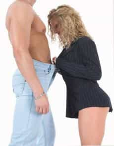

< < < Back
Research Shows That Equipment Isn’t A Priority For Most Women – Return Of Kings
At some point in most of our lives, there is one thought that invades our minds, just before we release the kraken on a female we’ve gamed into coming back to our place to “check out our vintage record collection.”
“Am I big enough?!?”
Back in the day this topic wasn’t oft discussed by men or women. Given the sexual climate of yesteryear, when most women didn’t slut around, a man’s penis size was of little consequence if at all.
But the combination of a sex obsessed culture, unprecedented access to pornography, and the sheer abundance of sluts walking around has pushed this subject front and center. These days it’s not uncommon to witness a conversation between women young and old about a man’s most popular organ with little effort to lower their voices.
So how much does it matter? Let’s break this down and see if we can get some answers.
Straight from the horse’s mouth
It’s common knowledge in these parts that taking relationship advice from women is a bad idea. When it comes to dick dimensions, however, the female perspective is the most valuable because they’re the ones being penetrated.
Another important reason for their point of view is that cock preference doesn’t leave much room for subjective analysis (read: hamster). They either like certain dicks or they don’t.
There are other elements that factor into good sex versus bad sex for women. But the simple fact is that no amount of game, money, frame, status, physical fitness etc. will make a roll of quarters feel like a cucumber.
So let’s take a look at a few thoughts from the ladies shall we?
It doesn’t matter to me as long as it isn’t too big or too small.
-Jennifer, 28
I don’t want to be scared of it. Average is your friend
-Ali, 22
I honestly can’t really tell if it’s bigger or smaller than the last guy or what’s “average.” I mean I would notice if it was huge or tiny, but that’s never happened to me. They all look pretty much the same and I think the difference is if a guy knows how to fuck.
-Tiffany, 27
The article these three comments are from is a survey asking 50 women ages 18 to 35 about penis size. Of those 50 women, 21 indicated that it didn’t matter as long as it wasn’t too big or too small, 23 said it didn’t matter at all, and only six took a liking to the well-endowed.
One would think that 50 women is hardly a large enough sample size to draw any definitive conclusions. Under normal circumstances I’d agree with that assessment. But given that most girls in this part of the world are pretty much the same it does lend a little more credence than most other 50 person sample sizes.

According to these accounts it would seem that most women don’t want to be mercilessly plowed by oversized schlongs for three straight hours like porn would lead you to believe (more on this later).
Take a look at what this female porn star says when asked about her preference in penis size. I’m willing to bet she’s not the only porn actress who feels this way:
If there is anything I’ve learned from my job, it’s that a person’s physical anatomy has very little to do with how much fun you can have in bed together…
First, the majority of those giant penises that you seen in porn are not fun to have sex with. When I get on set with a guy with a thirteen-inch cock, I’m like “oh Jesus, how is this going to work?” It usually takes a lot of patience and deep breathing.”
Second, while I sometimes enjoy the feeling of a lot of penetration (a feeling that can be achieved just as easily with toys or hands), penetration in itself is not what makes me orgasm. This is true, I think, for most women. I get the most turned on by sex that is creative and dynamic—I like the dirty talk, attentive touching, oral sex, and finger penetration much more than than simply being pounded by a large appendage. I mean, I like penises, but I think there is this myth that heterosexual sex is supposed to begin and end with the cock. There is just so much more to it. I think the whole big-cock mythology is pretty silly.
-Lorelei Lee, Adult film actress
Though we can’t assume anything it’s probably a safe bet that the vast majority of women from your average sexually active female to porn stars who get fucked by large cocks on the regular don’t put too much stock in a man’s size, unless that man is in the top or bottom 1%.
Yes, there are female porn stars out there who like to feel the D in their stomachs…
…I wanna feel that shit so deep in my vag…I wanna feel it come out my throat through my asshole.
-Kristina Rose, Adult film actress
…and everyday girls (read: non-porn stars) who like ’em large…
I prefer them to be on the big side.
-Megan, 25
…but cervix-crushing sex seems to be preferred by the minority…porn stars or otherwise. So when it comes to penetration, it looks like most females prefer pleasure over pain.
The “super slut” effect
We all know that most women in the Anglosphere are raging sluts, but there are a fair share of girls who have triple-digit notch counts. Girls who’ve slept with exorbitant amounts of men have no doubt been reamed by more above average phalluses than the average female. It’s simple probability.
Physiologically speaking, this kind of action wears out a vagina by stretching it to the point it feels looser upon entry. Kegels may help delay the onset of a condition my crew and I affectionately refer to as “triple S” (super slut snatch). But taking 100+ cocks a collective 1000+ times eventually takes its toll, and before she knows it she needs close to a top one-percenter to feel anything down there.
Girls can (and do) refute this all they want to, but this is simple physics. The more cocks a girl takes the looser she’ll get. Further, if this were a myth like they proclaim, then vaginal rejuvenation procedures like the “love knot” wouldn’t exist.
The effects on the sexual market from a neomasculine point of view are obvious. No man wants to feel like he’s fucking an open window, as it’s a pretty accurate slut tell and men with options don’t commit to sluts.
As for girls with triple-digit notch counts, it’s a catch-22: she can’t advertise that she needs bigger penises to stimulate her overtaxed vagina lest she look and sound like a slut. On the flip side she can’t be physically satisfied by average-sized men forcing her to “try before she buys.” And given that most men have average-sized dicks, she ends up “shopping” quite a bit more, which only further increases her notch count.
Sometimes, however, girls like to brag about how big their boyfriends are or how they need super large dicks to please them. My guess is that this is another projection play in that a woman who brags about this stuff makes them look more experienced and selective, which is exactly what they want in a man.
This article is a conversation between four women about penis size. Of the four women, one in particular unabashedly brags about how she needs foot long dongs to please her. She even acknowledges that admitting as much makes girls look slutty, but she brags away about how she just can’t deal with a man who is less than 8″:
Well, I think size is very important. A man has to have a big package to please me. It has to be long, let’s say 8 inches or more, and the girth should be thick as well.
“Giovanna” goes on to brag about her blowjob skills (referring to it as a skill called “Project Deep Throat”) and about how she’d dump a guy in a heartbeat for not being hung like a horse. It should come as no surprise that she’s 30 years old and never married validating her parking at the Circus du Carousel.
I also take AskMen articles with a grain of salt anyway, as most of their advice is laced with blue pill excrement. But even in this article you’ll notice that three out of four women don’t put much importance in the size of a man’s penis.

The super slut effect, among other things, explains why virgin brides stay with their husbands at a much higher rate. They only know one penis (as they should) so there’s nothing else to compare it to psychologically or physically.
The bottom line here is that if a woman needs extra large penises to get off, she’s more than likely taken cocks-a-plenty for a good long while. Most penises are more than large enough to satisfy most women, even sluts. The only exceptions seem to be girls who have excessively high notch counts.
The role of pornography
Quitting porn is a message consistently preached in the ‘sphere for a number of reasons. One of the most important reasons is that watching it enough will eventually warp your mind into thinking you have to have a two-foot ding-a-ling to please a woman and this is where most (if not all) penis size anxiety starts.
The simple truth is that male porn stars are the top 1% in terms of penis size. This means that they have bigger dicks than most of the male population. The reason porn directors use these guys is that it looks better on screen. That’s it. Average doesn’t cut it when trying to generate clicks, so they err on the side of aesthetic superiority.
Most men are conscious of their dick size as a matter of biology. This isn’t necessarily a bad thing because in ancient times a large penis represented fertility (and still does to a much lower extent). A man’s ability to impregnate women and pass on his genes symbolized true masculinity so the larger his organ, the more children he is perceived to be able to father.
That mentality has sustained itself through centuries of generations, but the very concept has been twisted and perverted. With more and more women getting in line to ride the carousel as opposed to marrying young and bearing children, a man’s ability to make her squirt is all she cares about.
As men we want to please women sexually to keep them coming back for more. And when we watch men with huge dongs banging pretty girls who are moaning and groaning as though they’re having the best sex of their lives, we internalize this, thus, planting the seeds of insecurity about our own sizes.
Porn has it’s place, but like Troy Francis said in his latest post, moderation is key. Show me a man who is overly concerned with his cock size and I’ll show you a man who watches way too much porn.
It’s all about you
At the end of the day this is more about your psyche than your size. If you’re confident in the bedroom it doesn’t matter how big or small you are. Confidence is the most attractive trait a man can possess and this naturally carries over into the dirty deed:
I think a guy with a big dick is more confident, so he’s better in bed.
-Jamie, 24
Walk around like you’ve got a 13″ cock and it will reflect in all of your actions—especially sex.
And if a girl mentions anything to you about size or performance, treat it like a shit-test. This conversation happened in my car just this past weekend:
Her: The sex used to be great but I got tired of him being a one minute man with his small thing.
Me: Well I’ve totally got him beat because I’m going to give you 90 seconds of pleasure with my three inch destroyer…just you wait.
She laughed her ass off and we ended up having a great night together. More importantly her statement is further proof that the “size of the boat-motion in the ocean” cliche is true. She acknowledged her ex had a small dick but the sex was great anyway. She only got bored when his performance tanked.
Now of course you’ll find articles like these that attempt to further marginalize men and sap our confidence. But the fact of the matter is that most women don’t place nearly the emphasis on cock size as we do because they know that skill trumps size every time:
No. Prime example: Joe used magnum condoms and Mathias didn’t, but Mathias was a better lover.
-Marissa, 26
As long as you time your entry when she’s warmed up (all girls love foreplay, gentlemen…learn it, hone it, use it) and you passionately dominate her, she’ll squeal like that porn starlet. The only difference is that your girl’s noises will be authentic.
So does size really matter? With most girls, probably not.
Read Next: Stop Watching Porn


{kind=link}
{kind=link}